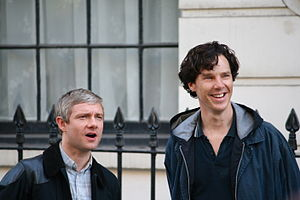

Родился в городе Олдершот, в английском графстве Хэмпшир. Был самым младшим после трёх старших братьев и сестры в семье Джеффри, морского офицера, и Филомены Р. Норрис. Родители развелись, а когда Мартину было 10 лет, отец умер от сердечного приступа. Фримен окончил среднюю римско-католическую школу в городе Чертси в Суррее, после чего учился в Центральной школе сценической речи и драматического искусства в Лондоне. С 15 лет играл в молодёжном театре, но решил стать актёром только спустя пару лет.
Мартин Фримен состоял в фактическом браке с британской актрисой Амандой Аббингтон, с которой познакомился на съёмках телефильма «Только мужчины» в 2000 году. Они также снялись вместе в фильмах «Собирая осколки бутылок», «Долг отдай», «Робинсоны», «Все вместе» и сериале «Шерлок». У них двое детей: сын Джо, родившийся в 2005 году, и дочь Грэйс, которая родилась в 2009 году. 22 декабря 2016 года стало известно о расставании пары. «Мы с Амандой больше не вместе, но мы очень хорошие друзья. Я всегда буду любить и уважать Аманду», — сказал актёр в интервью для Financial Times.
С 2010 года Фримен снимается в роли доктора Джона Ватсона в сериале «Шерлок», современной экранизации детективных рассказов о Шерлоке Холмсе на BBC. Эта роль принесла актёру премию BAFTA в 2011 году. Его бывшая гражданская жена Аманда Аббингтон с третьего сезона играет там его жену Мэри Морстен. Фримен считался первым претендентом на главную роль в фильме «Хоббит» Питера Джексона, хотя утверждалось, что съёмки в «Шерлоке» могут помешать этому. 22 октября 2010 года стало известно, что он официально утверждён на роль молодого Бильбо Бэггинса.
 В мае 2015 стало известно, что Мартин Фримен присоединится к Кинематографической вселенной Marvel. 6 мая 2016 года вышел фильм «Первый мститель: Противостояние» с участием Фримена. В интервью на Giffoni Film Festival 2015 Фримен рассказывает о том, что его персонаж работает на американское правительство, а также замечает, что до конца непонятно, положительный это персонаж или нет, отчасти именно поэтому Мартину нравится эта роль. В 2018 году Фримен вновь вернулся к роли Эверетта Росса в блокбастере Marvel «Чёрная пантера».Одна из самых заметных ролей Мартина Фримена — Тим Кентербери в комедийном сериале «Офис» (2001—2003). За эту роль актёр получил две номинации на престижные премии: British Comedy Award и BAFTA TV Award. Также он сыграл главные роли в ситкоме Hardware (2003—2004), телесериале «Робинсоны». Также он снялся в эпизодах сериалов «Эта жизнь» (1997), «Книжный магазин Блэка» (2000) и в фильме «Реальная любовь» (2003). Помимо различных комедийных ролей Фримен сыграл и несколько серьёзных драматических, самая значительная — лорд Шефтсбери в историческом мини-сериале BBC «Последний король» (2003).Фримен снимался в эпизоде фильма «Типа крутые легавые» (2007), сценарий к которому написали авторы фильма «Зомби по имени Шон» Саймон Пегг и Эдгар Райт. В «Зомби по имени Шон» у него была небольшая роль без слов — бойфренда Ивонн, Деклана. Он играл главную роль в фильме 2007 года «Все вместе» (режиссёр и сценарист Гэвин Клэкстон). Также он появляется в видео кавера Faith No More на песню I Started a Joke. Снимался в нескольких передачах на BBC 6 Music. В мае 2009 года сыграл в комедии «Парень встречает девушку» — четырёхсерийном мини-сериале, который раскрывает изменение героев Вероники и Дэнни после того, как они поменялись телами.